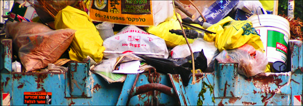

Ver.di Streik – Strategien gegen die Müllflut

Ab morgen könnte es passieren, dass die örtliche Müllabfuhr streikt. Wie lange sie das tut ist unklar und auch für von langer Hand geplante Maßnahmen zur Kompensierung dieses Mangels ist es zu spät. Doch es gibt ein paar Verhaltensweisen, die einem helfen die müllgeschwängerte Zeit zu überstehen. Phase 5 stellt sie im folgenden vor:
-
Supermärkte sind seit einiger Zeit verpflichtet den Müll, den sie rausgeben auch wieder anzunehmen. Das heißt, dass man überflüssige Verpackungen direkt nach dem Einkauf dort entsorgen kann. Bei manchen Verpackungen, wie Tetra Paks, ist das natürlich nicht ohne weiteres möglich, schließlich kann man einen Liter Milch nicht mal eben in seinen Hamsterbacken nach hause transportieren.
Und selbst wenn, könnte dies auf Unverständnis seitens der Familienmitglieder/Mitbewohner stoßen. Also kurzfristig unentbehrliche Verpackungen mitnehmen, und beim nächsten Supermarktbesuch entsorgen, wenn sie leer sind.
-
Ebenfalls kritisch sind Essensreste wie halbabgenagte Putenschenkel, oder gebratene Pansenreste. Da der gewöhnliche Supermarkt keine Restmülltonne anbietet, sollte man solche Sachen in eine Plastetüte tun, und im Plastikbehälter des Supermarkts versenken. Angesichts der prekären Müllsituation dürften die Mitarbeiter vollstes Verständnis dafür haben.
-
Müll zieht Ratten an. Das ist nichts neues, jedoch verschlimmert sich die Situation, wenn das Müllaufkommen rapide zunimmt. Es ist deshalb ratsam vor dem Verlassen des Hauses die Hose in die Socken zu stecken. Allerdings sollte man sich diesbezüglich bei den lokalen Homies über die Gepflogenheiten in der Hood informieren, nicht dass man ohne es zu ahnen in einen fiesen Gangbattle hineingezogen wird.
-
Müll zieht obendrein auch Bären an. Für den Fall einer Begenung rate ich davon ab sich tot zu stellen. Ohne hier jemandem zu nahe treten zu wollen, aber der Bär wird einen für Müll halten und anfangen einen anzuknabbern. Dies kann mitunter sehr schmerzhaft sein. Sinnvoller ist es da stets einen Knüppel bei sich zu tragen. Ich empfehle Eiche oder Pappel. Von der Länge her ist ein Drittel der Körpergröße ideal. Eine Lederschlaufe am unteren Ende verhindert, dass sich der Knüppel im Gefecht mit Meister Petz verabschiedet.
Wer die Show liebt kann übrigens auch auf einen Teleskop-Schlagstock zurückgreifen.
-
Wer sich im örtlichen Supermarkt durch zu viele ekelerregende Speisereste unbeliebt gemacht hat, oder es einfach nicht mit seinem Lifestyle vereinbaren kann Müll durch den Kiez zu tragen, kann seine Abfälle auch direkt verbrennen. Entweder in der Wohnung in einem fest installierten Kachelofen, oder vor dem Haus in einer Street-Credibility-behafteten Mülltonne. Letzteres kann in Kombination mit Wollhandschuhen ohne Fingerkuppen und Doppelkorn zu einem echten Happening ausgeweitet werden.
Allerdings sollte man - egal auf welche Variante man zurückgreift - sich umwelttechnisch absichern und CO2-Zertifikate in adäquater Zahl bei der EEX erwerben. Schließlich haben wir die Erde nur geliehen.
-
Schlussendlich rate ich jedem die positiven Aspekte dieses Müllstreikes zu sehen: Der Müll liegt nun lange genug rum, so dass man ihn in Ruhe inspizieren kann. Schließlich ist das, was manche achtlos dem Hausmüll übereignen, in den Augen anderer noch äußerst nützlich. Ich empfehle deshalb ausgedehnte Müllurchforstungsspaziergänge.
So, das wären die nützlichen Tipps von Phase 5. Mit diesen ausgefuchsten Strategien gewappnet, dürfte ein Müllstreik kein Problem mehr darstellen, auch wenn er sich über Monate hinzieht. Also viel Spaß!
Bild: lunch von Bright Tal unter CC-Lizenz
6 Kommentare zu "Ver.di Streik – Strategien gegen die Müllflut"
- Externe Links im selben Fenster öffnen
- Externe Links in neuem Fenster öffnen
magnus
Ich rate dazu, Plastik unter Hitze zu rundlichen Knödeln zu formen und dann auf der Strasse zu verteilen. Können die Strassenkinder nett Fussball mit spielen und sich drum hauen; siehe "fieser Gangbattle"
Herschel Rubinstein
eben, warum sollte der müllstreik einen davon abhalten gutes zu tun?!
übrigens frage ich mich, inwiefern der löffelbiegen-artikel mit dem müllstreik verwandt ist...??
Jupp
@herschel: ich muss dich leider kori..., korri... ach verbessern, den Knüppel würde ich nicht aus Eiche machen, da du sonst Lila Hände bekommst und er ist sehr schwer. besser ist in diesem Fall Esche. man siehe Axtstiehle. sie sind sehr stabiel und nicht so schwer. Ansonsten wäre ein upgrade variante für den Knüppel ein durch das obere Ende getriebener 180mm langer Nagel.
Erik
Wem der Bärenknüppel zu martialisch ist, könnte doch auch alternativ ein Glas Honig mit sich führen.
Wichtig: Im Bedarfsfall das Glas öffnen und von sich wegwerfen und nicht vor sich auf den Boden stellen.
jasper.
sauber!
aber zu drittens. ich steck meine hose eher in die socken. andersrum, is komisch.
Herschel Rubinstein
du hast recht. kleiner faux-pas meinerseits.